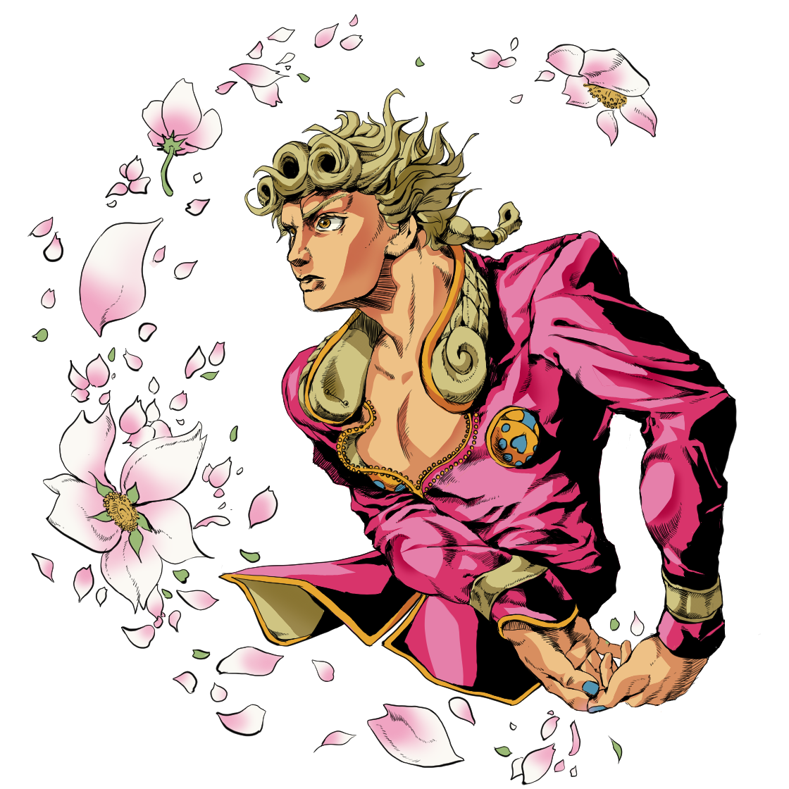

'황금의 바람'이란?
《황금의 바람》은 아라키 히로히코의 일본 만화 《죠죠의 기묘한 모험》의 5부이다. 슈에이샤의 〈주간 소년 점프〉에서 1995년 12월 11일부터 1999년 4월 5일까지 연재됐으며 단행본으로 총 17권으로 엮여 출판됐다. 연재 당시 제목은 《죠죠의 기묘한 모험 제5부: 죠르노 죠바나 (황금의 유산)》이었다. 《다이아몬드는 부서지지 않는다》의 후속편으로 이후 《스톤 오션》으로 이어졌다
배경은 2001년 이탈리아로 주인공은 오래 전 사망한 악당 디오 브란도의 서자 죠르노 죠바나이다. 고향을 위해 지역 최고의 마피아가 된다는 목표를 가진 죠바나가 자신의 스탠드 능력 '골드 익스피리언스'를 활용해 일행과 함께 모험을 하는 이야기를 그렸다.